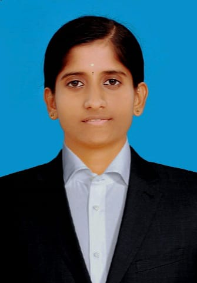

Hi, I'm Renuka Sakthivel
I am a passionate Machine Learning Enthusiast and Web Developer with a strong foundation in Python, Java, HTML/CSS, and SQL. I thrive on solving complex problems and creating impactful solutions. Currently, I am pursuing my Bachelor of Technology in Information Technology from Mahendra Engineering College (Anna University).
My goal is to contribute to innovative projects and grow in dynamic organizations where I can apply my skills and continue learning. Let's connect and create something amazing together!